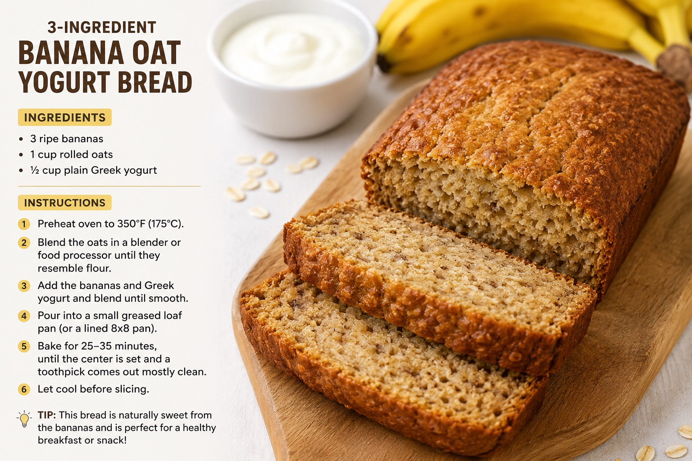

This banana bread is moist, flavorful, and perfect for using up overripe bananas. Follow this simple recipe to make your own batch of delicious banana bread at home!
Without any baking soada, baking powder, eggs, or flour, this won't have the fluffy texture of traditional banana bread. It will be denser and more like a baked oatmeal loaf, but its still tasty and naturally sweet from the bananas.
If you have eggs and are okay adding them, this version has a much more bread-like texture:
Blend and bake at 350°F (175°C) for 35-40 minutes.